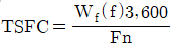
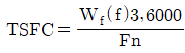
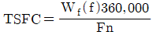
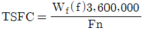
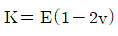
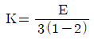
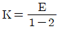
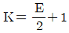
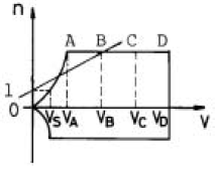
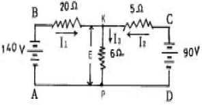

항공산업기사 (2005-03-20 기출문제)
1과목: 항공역학
1. 수평선회에 대한 설명으로 가장 올바른 것은?
- 경사각이 크면 선회속도를 작게해야 한다.
- 선회시 실속속도는 수평비행 실속 속도보다 작다.
- 선회반경은 속도가 클 수록 작아진다.
- 경사각이 크면 선회반경은 작아진다.
(정답률: 65%)

2. 프로펠러 항공기의 항속거리를 최대로 하기 위한 설명 중 가장 올바른 것은?
- 연료 소비율 최대, 양항비 최대 조건으로 비행한다.
- 연료 소비율 최소, 양항비 최대 조건으로 비행한다.
- 연료 소비율 최대, 양항비 최소 조건으로 비행한다.
- 연료 소비율 최소, 양항비 최소 조건으로 비행한다.
(정답률: 87%)
3. 프로펠러의 고형비(solidity ratio)란?
- 모든 깃의 부피 / 프로펠러 원판 부피
- 프로펠러 원판부피 / 모든 깃의 부피
- 모든 깃의 면적 / 프로펠러 원판 면적
- 프로펠러 원판 면적 / 모든 깃의 면적
(정답률: 51%)
4. 공기력 중심(aerodynamic center)에 대한 설명 내용으로 가장 거리가 먼 것은?
- 속도가 일정한 경우에 받음각의 변화에도 불구하고 모멘트가 일정하게 되는 날개 시위선상의 점이다.
- 아음속 날개에서는 공기력 중심의 일반적인 위치는 대개 시위의 25% 부근에 위치한다.
- 초음속 날개에서는 공기력 중심의 일반적인 위치는 대개 시위선의 15% 부근에 위치한다.
- 모멘트 계수의 값이 일정한 값을 가지는 날개 시위상의 점이다.
(정답률: 50%)
5. 글라이더가 고도 2,000m 상공에서 양항비 30인 상태로 활공한다면 도달할 수 있는 수평 활공거리는 얼마인가?
- 40,000m
- 50,000m
- 60,000m
- 70,000m
(정답률: 94%)
6. 유압식 정속 프로펠러(hydraulic constant speed prop')에서 카운터 웨이터가 달린 경우 저피치가 되게하는 힘은 무엇인가?
- 카운터 웨이터의 원심력
- 카운터 웨이터의 원심력 원심비틀림 모멘트
- 스피더 스프링의 장력
- 조속기 오일압력
(정답률: 47%)
7. NACA 23015 날개골에 대한 설명으로 가장 올바른 것은?
- 2 : 최대두께가 시위의 2%이다.
- 3 : 최대캠버의 위치가 시위의 15%이다.
- 0 : 평균캠버선의 뒤쪽 반이 곡선이다.
- 15 : 최대캠버의 크기가 시위의 15%이다.
(정답률: 68%)
8. 최근의 초음속기에서 옆놀이 커플링 현상을 막기위해 가장 많이 사용하는 방법은?
- 벤트럴 핀 (Ventral pin) 부착
- 볼택스 플랩(Vortex flap) 사용
- 실속 스트립(Stall strip) 사용
- 윙넷 (Wingnet) 부착
(정답률: 67%)
9. 날개의 후퇴각을 크게하면 임계마하수를 높일 수 있다. 그이유로 가장 올바른 것은?
- 항력계수를 감소시키기 때문
- 조종성이 좋아지기 때문
- 압력중심의 이동이 적기 때문
- 날개시위 방향으로 공기흐름 속도가 작아지기 때문
(정답률: 42%)
10. 무게가 8,000kgf 이고, 날개면적 50m2 인 항공기가 있다. 이 항공기가 최대 양력계수 CLmax=1.6으로 착륙할 때 실속속도(landing speed)를 구하면 얼마인가? (단, 밀도 ρ=1/8 kgf·sec2/m4 이다.)
- 40 m/sec
- 50 m/sec
- 60 m/sec
- 70 m/sec
(정답률: 61%)
11. 항공기 이용마력이 필요마력보다 클 경우 항공기는 어떤 상태인가?
- 감속된다.
- 상승한다.
- 침하한다.
- 실속한다.
(정답률: 78%)
12. 고도 10,000m 상공에서의 대기온도는 얼마인가?
- -35℃
- -40℃
- -45℃
- -50℃
(정답률: 81%)
13. 평형상태를 벗어난 비행기가 이동된 위치에서 평형상태를 유지한다면, 즉 원래의 평형상태로 되돌아 오지도 않고, 평형상태에서 벗어난 방향으로도 이동하지 않는 경우, 이를 무엇이라 하는가?
- 정적 안정(positive static stability)
- 정적 불안정(negative static stability)
- 정적 중립(neutral static stability)
- 동적 안정(dynamic stability)
(정답률: 72%)
14. 비행기의 세로안정에 가장 큰 영향을 미치는 것은?
- 날개
- 수평꼬리날개
- 수직꼬리날개
- 도움날개
(정답률: 68%)
15. 경계층에서 흐름의 떨어짐을 적극적으로 이용하여 설계하는 항공기 날개는 어느 것인가?
- 삼각형
- 테이퍼형
- 타원형
- 직사각형
(정답률: 43%)
16. 항공기 3축에 대한 운동과 조종면과의 관계를 가장 올바르게 나타낸 것은?
- 승강키와 요잉(Yawing)
- 방향키와 핏칭(Pitching)
- 도움날개와 롤링(Rolling)
- 선회와 스포일러
(정답률: 85%)
17. 1개 이상의 비행속도에서 최대의 효율을 얻을 수 있도록 분할 허브를 사용하여 지상에서 비행목적에 따라 피치를 조정할 수 있도록 된 프로펠러의 종류는?
- 고정피치 프로펠러
- 가변피치 프로펠러
- 정속 프로펠러
- 조정피치 프로펠러
(정답률: 73%)
18. 아음속 흐름과 초음속 흐름을 비교할 때 가장 두드러진 차이점은 무엇인가?
- 마찰력 효과
- 점성작용
- 압축성 효과
- 가속작용
(정답률: 63%)
19. 특정한 헬리콥터에서는 회전날개(Rotor Blades)에 비틀림 각을 준다. 그 이유로 가장 올바른 것은?
- 정지비행시 균일한 유도속도의 분포를 얻기 위해
- 회전날개의 강도를 보장하기 위해
- 회전날개 후류의 영향을 최소화하기 위해
- 회전날개의 회전속도를 증가시키기 위해
(정답률: 74%)
20. 헬리콥터 회전날개 모양은 날개끝(Tip)으로 갈수록 어떠한 모양인가?
- 두껍고 적은 양력을 발생시키는 모양
- 두껍고 많은 양력을 발생시키는 모양
- 얇고 적은 양력을 발생시키는 모양
- 얇고 많은 양력을 발생시키는 모양
(정답률: 48%)
2과목: 항공기관
21. 터보 제트기관에서 추력비 연료소비율을 계산하는 공식은 어느 것인가? (단, Wf:연료의 중량유량(pph), Fn:기관의 진추력)




(정답률: 73%)
22. 가스터빈 기관의 배기소음 방지 방안에 대한 설명으로 가장 올바른 것은?
- 배기소음 중의 고주파음을 저주파음으로 변환시킨다.
- 노즐의 전체 면적을 증가시킨다.
- 대기와의 상대속도를 크게한다.
- 대기와의 혼합되는 면적을 넓게한다.
(정답률: 48%)
23. 가스터빈 기관에서 연료계통의 여압 및 드레인 밸브(P&D valve)의 기능이 아닌 것은?
- 1차 연료와 2차 연료 흐름으로 분리한다.
- 기관 정지시 노즐에 남은 연료를 외부로 방출한다.
- 일정 압력까지 연료 흐름을 차단한다.
- 연료 압력이 규정치 이상 넘지 않도록 조절한다.
(정답률: 58%)
24. 다음 중 어느 캠링(cam ring)이 가장 천천히 회전 하겠는가?
- 5 cylinder 엔진에 사용된 2 lobe cam ring
- 7 cylinder 엔진에 사용된 3 lobe cam ring
- 9 cylinder 엔진에 사용된 4 lobe cam ring
- 위 모두 같은 속도로 회전한다.
(정답률: 62%)
25. 크랭크 축의 런 아웃(run-out)측정을 위하여 다이얼 게이지(dial gage)를 읽은 결과 +0.001 inch부터 -0.002 inch까지 지시하였다면 이때 런 아웃 값은 몇 인치 인가?
- -0.001
- 0.002
- 0.003
- -0.002
(정답률: 68%)
26. 프로펠러의 성능에서 진행률을 나타내는 식은? (단, V=비행속도, n=프로펠러 회전속도 , T=추력, P=동력, D=프로펠러 지름 )
- T×P/V
- V/nD
- nD/V
- V/T×P
(정답률: 84%)
27. 내연기관에서 이론 열효율을 구하기 위해 설정한 이상적인 엔진 사이클의 조건을 설명한 내용 중 틀린 것은?
- 작동유체를 공기라하고 공기의 비열을 온도에 대하여 일정하게 한다.
- 압축, 팽창 행정은 외부와의 열교환이 없는 단열변화라 한다.
- 흡입, 배기에는 저항이 많고 대기압상태에서 흡.배기가 이루어진다.
- 작동유체의 운동에너지는 무시한다.
(정답률: 39%)
28. 가스터빈 기관용 원심식 압축기에 대한 설명 중 틀린 것은?
- 단당 압력비가 높다.
- 제작이 쉽다.
- 구조가 튼튼하다.
- 대형 기관에 적합하다.
(정답률: 64%)
29. 터보 팬 엔진(Turbo Fan Engine)의 바이패스 비(Bypass Ratio)란?
- 2차 공기량/1차 공기량
- 1차 공기량/2차 공기량
- 1차 공기량/전체 공기량
- 2차 공기량/전체 공기량
(정답률: 77%)
30. 피스톤의 구비조건이 아닌 것은?
- 관성의 영향을 크게 받을 것
- 온도차에 의한 변형이 작을 것
- 열전도가 양호할 것
- 중량이 가벼울 것
(정답률: 84%)
31. 고공성능이 가장 좋은 엔진은 어느 것인가?
- 터보 팬 엔진
- 램 제트 엔진
- 펄스제트 엔진
- 터보 제트 엔진
(정답률: 50%)
32. 온도 환산식이 맞는 것은? (단, tc:섭씨도, tf:화씨도, Tc:켈빈도, TF :랭킨도)
- TF = (tf + 273)R
- tf = 9/5 tc + 32
- Tc = (tc +460)K
- tc =5/9(tf + 32)℃
(정답률: 66%)
33. 다음 중 두 개의 정압과정과 두 개의 등엔트로피 과정으로 이루어진 cycle은?
- Otto cycle
- Diesel cycle
- Rankine cycle
- Brayton cycle
(정답률: 62%)
34. 열역학에서 "밀폐계가 사이클을 수행할 때의 열 전달량은 이루어진 일과 정비례 관계를 가진다"라는 말로 표현된 법칙은?
- 열역학 제 1법칙
- 열역학 제 2법칙
- 열역학 제 3법칙
- 열역학 제 4법칙
(정답률: 72%)
35. 다음 중 가장 큰 값은 어느 것인가?
- 지시마력
- 제동마력
- 마찰마력
- 모두같다.
(정답률: 76%)
36. 정속 프로펠러의 조속기 내의 파일롯(pilot)밸브는 무엇에 의해 작동되는가?
- 엔진오일 압력
- 조속기 플라이 웨이트(fly weight)
- 프로펠러 조절 레버
- 조속기 펌프 오일 압력
(정답률: 78%)
37. 캬브레터의 이코노마이저장치의 역할로 가장 올바른 것은?
- 고출력시에 일시적으로 농후한 혼합비로 한다.
- 고도에 의한 밀도의 변화에 대하여 혼합비를 적절히 유지한다.
- 풀 스로틀시의 연비를 절약한다.
- 순항속도에서 혼합비를 적절히 유지한다.
(정답률: 69%)
38. 대형 터보 팬 엔진의 터빈 케이스(Turbine case)의 냉각(Cooling)에 사용되는 것은?
- 압축기 블리드 공기(Compressor Bleed Air)
- 물-알콜(Water Alcohol)
- 미연소 가스(Gas)
- 팬 공기(Fan Air)
(정답률: 58%)
39. 항공기 기관의 소기 펌프(Scavenger pump)가 압력 펌프(Pressure pump)보다 용량이 크다. 그 이유는?
- 윤활유가 저온이 되어 팽창하기 때문에
- 소기되는 윤활유에는 공기가 혼합되여 체적이 증대함으로
- 소기 펌프가 파괴될 우려가 있으므로
- 압력 펌프보다 소기 펌프의 압력이 낮으므로
(정답률: 86%)
40. 왕복기관의 크랭크 핀(Crank Pin)이 일반적으로 속이 비어있는 목적으로 가장 거리가 먼 내용은?
- 크랭크 축의 중량을 감소시킨다.
- 윤활유의 통로를 형성한다.
- 탄소 퇴적물이 모이는 공간으로 활용된다.
- 크랭크 축의 냉각효과를 갖는다.
(정답률: 65%)
3과목: 항공기체
41. 동력 조종장치에서 조종사에게 조종력의 감각을 느끼게 하는 장치는?
- 수동비행 조종장치(Manual Flight Control System)
- 자동비행장치(Auto Pilot System)
- 아티피셜 휠링 디바이스(Artificial Feeling Devices)
- 유압 브스터장치(Booster System)
(정답률: 59%)
42. 착륙장치 계통에 대한 설명중 가장 거리가 먼 내용은?
- 트럭형식의 착륙장치는 바퀴수가 4개 이상인 경우로서 이를 보기형식이라고도 한다.
- 브레이크 시스템은 지상활주시 방향을 바꿀 때도 사용 할 수 있다.
- Anti-skid system은 저속에서 작동하며, 브레이크 효율을 감소 시킨다.
- Shimmy damper는 앞 착륙장치의 진동을 감쇠 시키는 장치이다.
(정답률: 80%)
43. 리벳트 재질과 머리형태가 틀리게 짝지어진 것은?
- A(1100) - 표시없음
- D(2017) - 머리에 오목한 점이 있다.
- DD(2024) - 머리에 두개의 튀어나온점이 있다.
- B(5⑤6) - 머리에 +표로 표시되어 있다.
(정답률: 45%)
44. 비행기 표피판의 두께 t=4mm이고, 전단흐름 q=3000kg/cm이다. 전단응력 τ는 얼마인가?
- τ=7.5kg/mm2
- τ=75kg/mm2
- τ=750kg/mm2
- τ=7500kg/mm2
(정답률: 48%)
45. TUBE FLARING에 대하여 설명하였다. 가장 올바른 것은?
- steel tube는 double flaring으로 제작된다.
- double flare tube는 single flare tube보다 밀폐 특성이 좋다.
- single flare tube는 가공경화로 인해 전단작용에 대한 저항력이 크다.
- single flare tube는 매끈하고 동심으로 제작이 용이하다.
(정답률: 77%)
46. 세미모노코크 구조의 동체(Semi-monocoque fuselage)는 구조상의 표피로 덮여진 수직과 세로부재로 구성되는데, 세로부재에 속하는 것은?
- Former
- Ring
- Longeron
- Bulk head
(정답률: 82%)
47. 항공기용 턴록패스너(Turn lock Fastener)에 대한 설명으로 가장 거리가 먼 내용은?
- 점검창을 신속하게 장탈·착 할 수 있도록 한다.
- quick open 패스너 또는 quick action 패스너 라고 불리운다.
- 턴록의 종류는 쥬스(dzus), 캠록(cam lock), 에어록(air lock)이 있다.
- 항공기 날개 상부표면 점검창을 장착하는데만 사용한다.
(정답률: 71%)
48. 항공기의 자기무게(Empty Weight)가 아닌 것은?
- 기체구조 무게
- 동력장치 무게
- 고정장치 무게
- 최대이륙 무게
(정답률: 79%)
49. FRCM의 Matrix 중 사용온도 범위가 가장 큰 것은?
- FRC
- BMI
- FRM
- FRP
(정답률: 68%)
50. 알루미늄 합금의 AA 식별 방법에서 첫자리 숫자가 2일 때, 그 주요 합금 원소는?
- 동(copper)
- 망간(manganes)
- 실리콘(silicon)
- 마그네슘(magnesium)
(정답률: 36%)
51. 항공기 기체구조의 형식에 있어서 트러스 구조형식(truss type)을 가장 올바르게 설명한 것은?
- 금속판 외피에 굽힘을 받게 하여 굽힘전단응력에 대한 강도를 갖도록 하는 구조방식이며 무게에 비해 강도가 강한 이점이 있어 현용 금속제 항공기에서 많이 사용하고 있다.
- 항공기의 전체적인 구조형식은 아니며 날개 혹은 꼬리날개와 같은 구조부분에 사용한 구조형식이다.
- 하나의 주구조가 피로로 인하여 파괴되거나 혹은 그 일부분이 파괴되더라도 나머지 구조가 작용하는 하중을 지지할 수 있게 하여 파괴 또는 과도한 구조변형을 가져 오지 않는 구조형식이다.
- 목재 또는 철판으로 트러스를 구성하고 여기에 천외피 또는 얇은 금속판의 외피를 씌운 것이며 소형 및 경비행에 많이 사용된다.
(정답률: 83%)
52. 다음은 강의 SAE 표시이다. 탄소의 함량이 가장 큰 것은 어느 것인가?
- 4⑤0
- 4140
- 4330
- 4815
(정답률: 76%)
53. 합성고무 중 우수한 안정성을 가져 내열성이 요구되는 부분의 밀폐제 등으로 사용되는 것은?
- 부틸
- 부나
- 네오프렌
- 실리콘 고무
(정답률: 60%)
54. 긴 시간동안 하중이 작용할 때 시간에 따라 변형도가 달라지는 현상을 무엇이라고 하는가?
- 크리프(creep)
- 항복(yilelding)
- 피로굽힘(fatigue bending)
- 파괴(fracture)
(정답률: 79%)
55. 항공기의 주 조종면과 가장 거리가 먼 것은?
- 도움날개(aileron)
- 안정판(stabilizer)
- 승강키(elevator)
- 방향키(rudder)
(정답률: 88%)
56. 인터날렌칭볼트(Internal Wrentching Bolt)사용상의 주의 사항으로 가장 올바른 내용은?
- 카운터 싱크와셔를 사용할 때는 와셔의 방향은 무시해도 좋다.
- MS와 NAS의 인터날렌칭볼트의 호환은 NAS를 MS로 교환이 가능하다.
- 너트의 아래는 충격에 강한 연질의 와셔를 사용한다.
- 이 볼트에는 연질의 너트를 사용한다.
(정답률: 60%)
57. AN 501 B- 416- 7 의 B는 스크류의 무엇을 식별하는가?
- 2017-T 알미늄 합금이다.
- 황동이다.
- 부식 저항 강이다.
- 머리에 구멍이 있다.
(정답률: 67%)
58. 케이블 조종계통(CABLE CONTROL SYSTEM)에 케이블의 장력을 항상 일정하게 유지하기 위하여 장치되어있는 부품은?
- 벨크랭크(BELLCRANK)
- 턴버클(TURNBUCKLE)
- 케이블 텐션 레귤레터(CABLE TENSION REGULATOR)
- 케이블 텐션 메터(CABLE TENSION METER)
(정답률: 49%)
59. 재료의 탄성계수 E 와 포아송의 비 ν 및 체적탄성계수 K간의 관계가 올바르게 된 것은?




(정답률: 45%)
60. 그림과 같은 V-n 선도에 있어 아무리 급격한 조작을 하여도 구조상 안전한 속도를 나타내는 지점은?

- A
- B
- C
- D
(정답률: 69%)
4과목: 항공장비
61. 그림과 같은 회로에서 저항 6Ω의 양단전압 E를 구하면 얼마인가?

- 20V
- 40V
- 60V
- 80V
(정답률: 63%)
62. 동기계(synchroscope)에 대한 설명 중 가장 올바른 것은?
- 기관과 프로펠러의 진동을 기계적으로 표시해 준다.
- 비행기의 선회에서 구심력와 원심력의 작용을 기계적으로 지시하는 계기이다.
- 이륙 또는 비행중에 기관을 가장 알맞는 추력으로 작동시키기 위하여 기관의 출력을 지시하도록 하는 계기이다.
- 마스터 기관과 슬레이브 기관의 회전수가 같은가를 표시해 준다.
(정답률: 45%)
63. 위성으로 부터 전파를 수신하여 자신의 위치를 알아내는 계통으로서 처음에는 군사 목적에만 이용 하였으나 현재는 민간 여객기,자동차용으로도 실용화에 성공하여 사용 중인 것은?
- 로란(LORAN)
- 오메가(OMEGA)
- 관성항법(IRS)
- 위성항법(GPS)
(정답률: 83%)
64. Rain Repellent 에 대한 설명으로 가장 올바른 것은?
- 고압의 공기를 사용하여 빗물을 제거하는 것으로 빗물제거에 가장 효과적이다.
- 건조한 글래스 표면에 사용하면 시야가 선명해진다.
- 강우량이 적을 때 사용하면 효과적이다.
- 심한 비가 내릴 때 와이퍼와 병행하면 효과가 좋다.
(정답률: 57%)
65. 유압계통에 사용되는 압력조절기에 대한 설명 내용으로 가장 거리가 먼 것은?
- 압력조절기에는 평형식 (balanced type)과 선택식(selective type)이 있다.
- kick-in 상태에서는 귀환관에 연결된 바이패스 밸브가 닫히고 체크밸브가 열리는 과정이다.
- kick-out는 계통의 압력이 규정값보다 낮을 때의상태다.
- kick-in압력과 kick-out압력의 차를 작동범위라 한다.
(정답률: 64%)
66. 지자기의 3요소가 아닌 것은?
- 편차(variation)
- 복각(dip)
- 수평분력(horizontal component)
- 자차(deviation)
(정답률: 68%)
67. 고유압 계통의 작동에 관한 기본 원리는?
- 아르키메데스의 원리
- 중첩의 원리
- 파스칼의 원리
- 베르누이의 정리
(정답률: 79%)
68. 전파(Radio Wave)를 설명한 것으로 가장 관계가 먼 내용은?
- 전파란 전계나 자계의 진동방향과 직각인 방향으로 진행하는 파이다.
- 공간에 자계/전계의 형태로 존재하며 거의 빛의 속도로 움직인다.
- 공간에 쉽게 방출시키기 위해서는 정현파의 주파수를 높게 해야한다.
- 전파는 주파수가 높으면 장애물 뒷 부분에 쉽게 도달 하고,낮으면 장애물 뒷 부분에는 도달하기가 어렵다.
(정답률: 59%)
69. 항공기용 발전기에 있어서 정속구동장치(constant speed drive)의 주 목적은 무엇인가?
- 일정한 정류량을 유지하기 위해서
- 일정한 전압을 유지하기 위해서
- 일정한 주파수를 유지하기 위해서
- 일정량의 전압과 전류를 감소하기 위해서
(정답률: 69%)
70. 조종사가 고도계의 보정(Setting)을 QNH 방식에 의해서 보정하기 위하여 고도계의 기압 눈금판을 관제탑에서 불러주는 해면기압으로 맞추워 놓았을 경우에 그 고도계가 나타내는 고도는?
- 압력고도
- 진고도
- 절대고도
- 밀도고도
(정답률: 74%)
71. 항공기에서 직류를 교류로 변환시켜 주는 장치는?
- 정류기(Rectifier)
- 인버터(Inverter)
- 콘버터(Converter)
- 변압기(Transformer)
(정답률: 88%)
72. 항공기에서 사용되는 교류는 400Hz이다.8000rpm으로 구동되는 교류발전기는 몇 극이어야 하는가?
- 2극
- 4극
- 6극
- 8극
(정답률: 68%)
73. 원격지시 COMPASS의 종류가 아닌 것은?
- MAGNESYN COMPASS
- GYROSYN COMPASS
- STAND-BY COMPASS
- GYRO FLUX-GATE COMPASS
(정답률: 58%)
74. 항공계기의 색표식 중 적색 방사선(Red radiation)은 무엇을 나타내는가?
- 최소, 최대운전 또는 운용한계
- 계속운전범위(순항범위)
- 경계 및 경고 범위
- 연료와 공기 혼합기의 Auto-lean시의 계속운전범위
(정답률: 76%)
75. 교류와 직류의 겸용이 가능하며, 인가되는 전류의 형식에 구애됨이 없이 항상 일정한 방향으로 구동 될 수 있는 전동기(motor)는?
- universal motor
- induction motor
- synchronous motor
- reversible motor
(정답률: 77%)
76. SSB 통신 방식이란 어떤 통신 방식인가?
- 위상변조 통신방식
- 양측파대 통신방식
- 주파수 변조 통신방식
- 단측파대 통신방식
(정답률: 38%)
77. 압력을 기계적 변위로 변환하는 것이 아닌 것은?
- 다이아프램
- 벨로우
- 버든 튜브
- 차동 싱크로
(정답률: 59%)
78. 항공기의 공압(Pneumatic)계통에서 수분 제거기의 역할을 가장 올바르게 설명한 것은?
- 압축기에 들어오는 공기의 수분을 제거한다.
- 압축기에서 압축되어 계통으로 가기 전의 공기의 수분 및 오일을 제거한다.
- 계통에서 작용하고 돌아오는 공기의 수분을 제거한다.
- 압축기 입구의 공기와 돌아오는 공기의 수분을 제거한다.
(정답률: 54%)
79. 계자 플래싱(field flashing)에 대한 설명 중 가장 올바른 것은?
- 계자에 남아있는 잔류자기
- 계자에 없는 잔류자기
- 발전기가 발전한 전압을 원만히 보내지 못하는 현상
- 외부에서 계자코일에 잠시 전류를 통해 주는 것
(정답률: 60%)
80. 프레온을 사용한 증기사이클 냉각장치(vapor cycle cool-ing system)에서 공기의 냉각은?
- 고온고압의 프레온가스가 공기에 의해 열을 빼앗겨 냉각된다.
- 액체프레온을 팽창시켜서 온도를 낮춘다.
- 프레온의 응축에 의하여 냉각된다.
- 액체 프레온이 객실공기의 열을 흡수하여 기화하므로서 냉각된다.
(정답률: 52%)